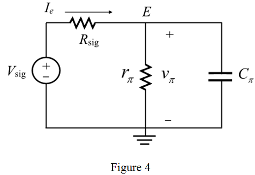

Consider the following sample common-base amplifier.

Consider the following sample common-base amplifier.
Consider the following high-frequency equivalent circuit of common-base amplifier:
Apply the ideal signal source,  , remove the base spreading resistance,
, remove the base spreading resistance,  . The capacitor,
. The capacitor,  presents between output node and ground. This circuit is feeding with the load resistor in parallel with load capacitor. The output resistor means the resistor
presents between output node and ground. This circuit is feeding with the load resistor in parallel with load capacitor. The output resistor means the resistor  is open.
is open.
The common-base amplifier replaced by its high frequency equivalent model is shown in Figure 3.
Hence, the high frequency (hybrid  model) equivalent of common-base amplifier is drawn.
model) equivalent of common-base amplifier is drawn.
(a)
The s-domain representations of the capacitors are respectively. Clearly, observe from Figure 3 that the emitter voltage is equal to .
Apply Kirchhoff’s current law at node, .
 is infinite, then the high frequency equivalent circuit at input side takes the form as shown in Figure 4.
is infinite, then the high frequency equivalent circuit at input side takes the form as shown in Figure 4. 
According to the open circuit time constant method, the time constant expression is derived by considering the various capacitors at a time in the circuit. The expression for time constant with contribution of capacitor is calculated by removing all other capacitors in the circuit. This process is applicable to all other existed capacitors.
The total time constant at input side is,
The pole at the input side for frequency is,
When the output resistance  is infinite, then the high frequency equivalent circuit at input side takes the form as shown in Figure 5.
is infinite, then the high frequency equivalent circuit at input side takes the form as shown in Figure 5.
The total time constant at output side is,
The pole at the output side for frequency  is,
is,
Hence, the pole at input and output side is derived.
For MOSFET common gate amplifier, the pole at the input side is,
The pole at the output side is,
On comparing the input and output poles of both BJT and MOSFET, it is concluded that these expressions are the bipolar counter parts of the MOSFET expressions.
Recall the expressions for pole at input side and output side.
Here,
In turns, calculate the value of transconductance,  .
.
Calculate the value of  by assuming the
by assuming the  .
.
Substitute 14 pF for  ,
,  for
for  , and in the expression of
, and in the expression of  .
.
Therefore, the value of  is .
is .
Substitute 1 pF for  , 2 pF for
, 2 pF for  , and
, and  for
for  in the expression of
in the expression of  .
.
Therefore, the value of  is
is  .
.
Calculate the unity gain frequency.
Therefore, the value of  is .
is .
Now, estimate the cut-off frequency (dominant pole) by comparing these two 3 dB or cut off frequencies.
Obviously, the least one is the dominant pole. Therefore, the dominant pole or cut off frequency is,

Therefore, the estimate value of  is .
is .